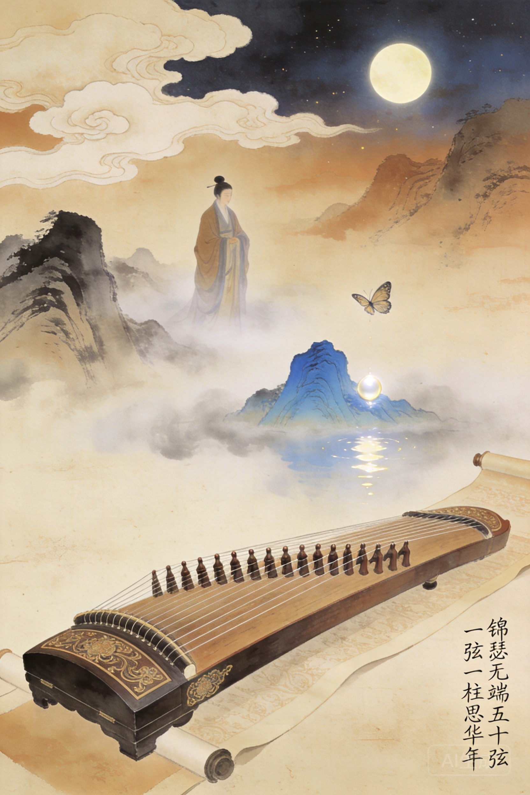

字义山，号玉谿生。早年丧父，家贫。
令狐楚亲授骈文。令狐属牛党。
同年娶王茂元之女。王属李党。
夹在两党之间，终生仕途不遂。
李党失势后，在各幕府漂泊。
写大量悼亡诗，至痛至深。
郁郁而终，年仅四十六岁。
《锦瑟》是中国文学史上最著名的未解之诗。八句五十六字，连接了庄周梦蝶、望帝化鹃、鲛人泣珠、蓝田生烟四个来自不同世界的神话意象。有人说是悼亡，有人说是自伤身世，有人说就是一首咏物诗。一千两百年过去，没有定论——而这恰恰是它永恒的魅力所在。李商隐大量使用「无题」作为诗题，开创了中国诗歌中「以不命题为题」的传统。
中国文学史最著名的未解之诗。八句五十六字，一千两百年没有定论。
大量使用「无题」作为诗题，开创「以不命题为题」的传统。
被牛李党争碾碎的一生。后世读他的诗，总能在最幽深的句子下摸到一个伤口的形状。
李商隐发明了「以不命题为题」的传统。他的大量诗作题为《无题》，不是偷懒，是故意——因为有些感受一旦命名就窄了，一旦翻译就死了。「此情可待成追忆，只是当时已惘然」——说的是什么情？对谁的追忆？一千二百年没有定论。而这恰恰是他要的：谜面本身就值得存在，谜底无所谓。这是中国文学中最接近现代主义美学的时刻。
牛党。亲授骈文。李商隐娶王茂元之女后被牛党视为背叛。
李党。李商隐娶其女后终生受累。
合称「小李杜」。两人风格迥异而惺惺相惜。